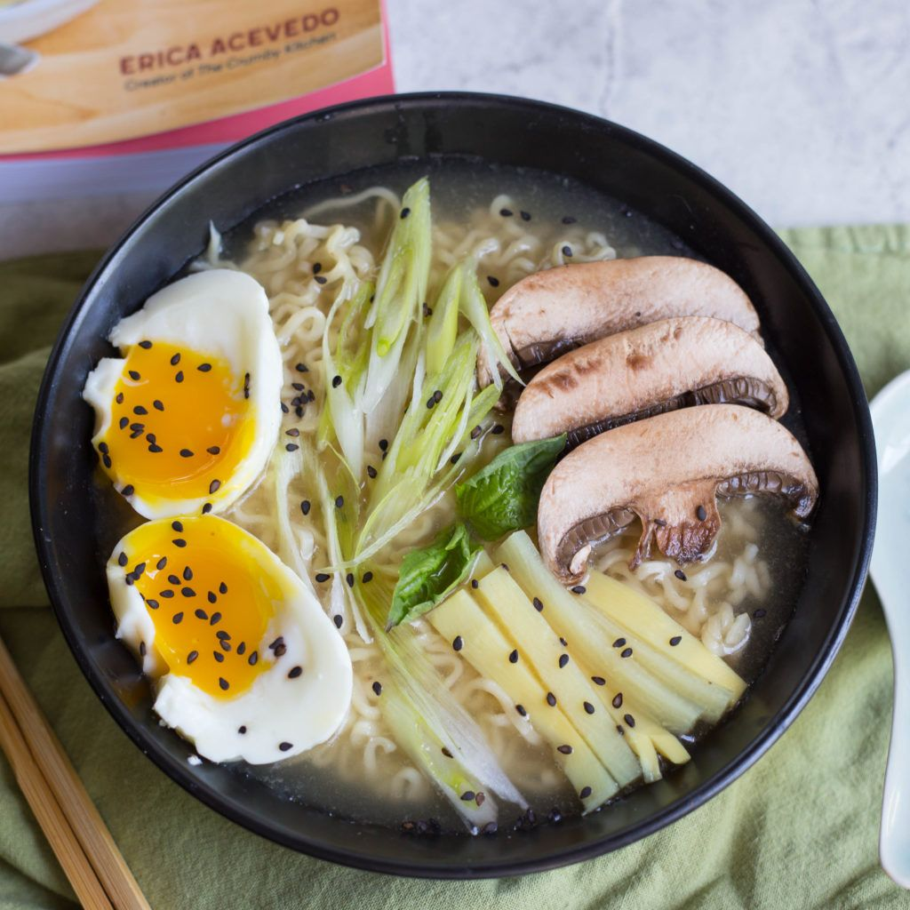
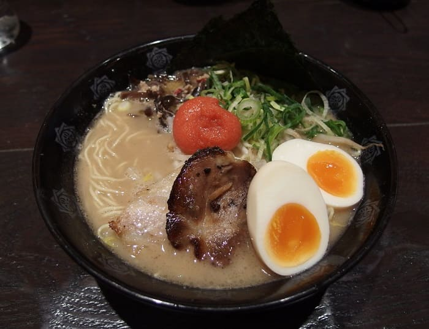

DEL'S MENU
| dish name |
dish |
description |
price |
| bulalo MAMI |
 |
It is a light colored soup that is made by cooking beef shanks and marrow bones until the collagen and fat has melted into the clear broth with noodles |
₱199 |
| Shoyu (soy sauce) |
 |
'Shoyu' in Japanese translates to soy sauce in English and it has a deep umami broth. Shoyu ramen is known for its sweet, salty broth, and array of toppings. Shoyu ramen is often topped with Chashu Pork and Soy Sauce Eggs. |
₱150 |
| Miso (soybean paste) |
 |
Miso is a salty, umami-rich fermented soybean paste that's made by adding a koji starter to rice or barley and combining the grains with salt and soybeans. It's an essential component of Japanese cuisine and is used in dressings, marinades, and even as the base of soups in the case of miso soup and some ramen broths. |
₱150 |
| Budae Stew |
 |
Learn how to make popular Korean hot pot dish – Budae Jjigae (Army stew or Army base stew)! It is loaded with Kimchi, spam, sausages, ramen noodles and much more |
₱300 |
| Shio (salt) |
 |
Toothsome noodles are nestled in a base of dashi and clear chicken broth and topped with seasoned bamboo shoots, sliced chicken chashu, and jammy ramen eggs. |
₱100 |
| Tonkotsu (pork bone) |
 |
noodle soup made with a pork bone broth—ton means pork and kotsu means bone. When collagen-rich pig parts like pork trotters and neck bones are cooked in water over high heat, the collagen in the connective tissue transforms into gelatin, which gives bone broth its silky texture. |
₱130 |
| ADD |
PRICE |
|
ADD |
PRICE |
| Fish cakes |
₱15 |
|
Hard boild egg |
₱15 |
| Grilled pork |
₱25 |
|
chicken |
₱25 |
| Corn |
₱15 |
|
Mushrooms |
₱15 |